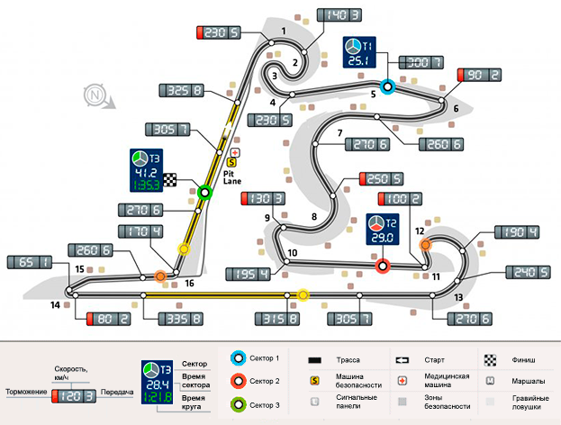

Гран-при Китая
- Название трассы: "Shanghai International Circuit" ("Шанхай").
- Место расположения: Шанхай, Китай.
- Первая гонка прошла в сезоне 2004 года.

Гран-при Мексики
- Название трассы: "Autódromo Hermanos Rodríguez" ("Мехико-Сити").
- Место расположения: в столице Мексики Мехико.
- Первая гонка прошла в сезоне 1963 года.